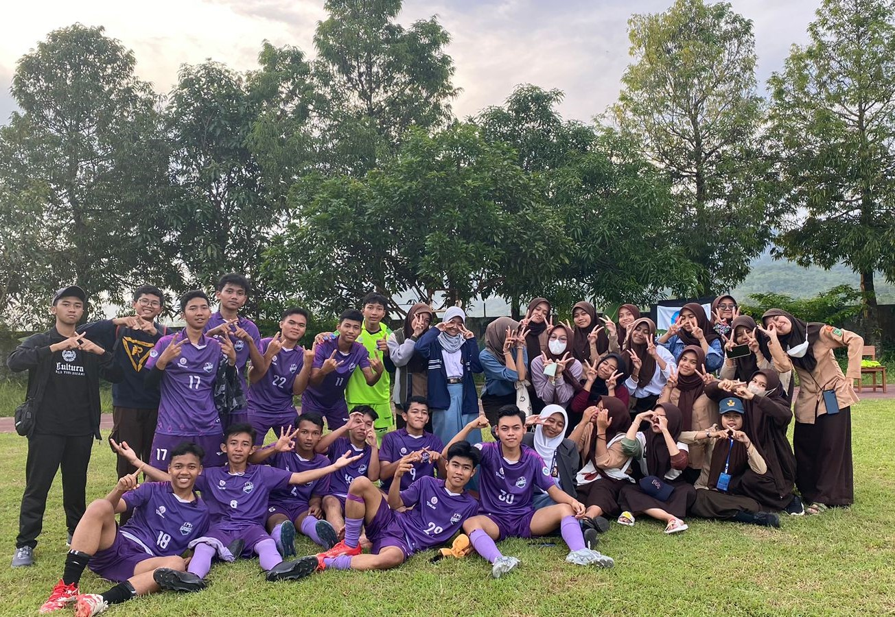
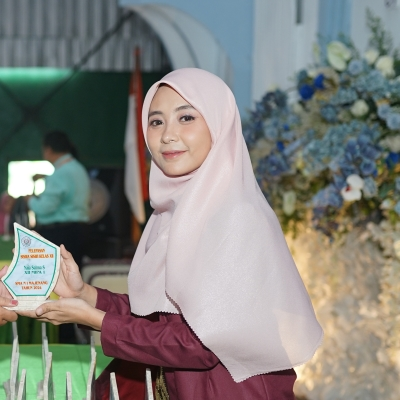

Link Google Drive Kenangan
KLIK UNTUK DOWNLOAD/MENAMBAHKAN FOTO&VIDEO KENANGAN SMA
KLIK UNTUK DOWNLOAD/MENAMBAHKAN FOTO&VIDEO KENANGAN SMA
Terima kasih udah mampir. Website ini dibuat untuk mengobati rasa kangen kalian ketika masa-masa sekolah di SMANSA. Kenangan 3 tahun yang tak terlupakan bersama keluarga Exposixx.

Cerita di balik nama Exposixx dan perjalanan kami selama 3 tahun
Berawal dari sebuah ide yang tertuang dalam pikiran. Kala itu kami menempati kelas 10 MIPA 6, memikirkan nama apa yang cocok untuk kelas ini. Nama Exposixx menjadi pilihan untuk kita memulai bersama perjuangan di masa SMA ini.
Exposixx memiliki beberapa arti menurut persepsi. Yang pertama adalah kelas X MIPA 6, yang kedua adalah Eks MIPA 6 yang berarti mantan penghuni kelas MIPA 6.
Arti yang kedua baru terpikirkan setelah naik ke kelas 11. Karena kami pikir namanya tetap MIPA 6. Ternyata kelas kami berubah menjadi MIPA 2. Sejak saat itu hingga kini nama Exposixx akan tetap abadi dan kami jaga nama baiknya sebisa mungkin.
Berikut adalah daftar orang-orang beruntung yang terpilih menjadi keluarga Exposixx
Menampilkan 36 dari 36 siswa
💌 Kamu Bisa Kasih Kesan Pesan atau Kata-Kata ke Mereka
Beri Kesan Pesan DisiniBerikut adalah 3 Guru yang pernah menjadi wali kelas kami selama di bangku SMA
Pak Hafidz adalah seorang guru PAI yang sangat perhatian terhadap kelas yang diampunya. Beliau adalah orang yang humoris dan merangkul anak-anaknya. Nasihat dan wejangan dari beliau sangat berguna bagi kami. Terima kasih sudah mau menerima kami, Pak. Rispekk

Bu Diah menjadi wali kelas perempuan satu-satunya selama kami di SMA. Beliau orangnya asik, Kenangan bersama beliau banyak, ketegasan dan perhatian serta kasih sayang beliau sangat berarti untuk menjadikan kami pribadi yang lebih baik lagi kedepannya.
Pak Rasda adalah Wali Kelas terakhir kami. Awalnya kami merasa sungkan dan tegang bersama beliau. Lalu seiring berjalannya waktu, beliau mulai menunjukkan kepeduliannya kepada kami. Pak Rasda sangat perhatian. Beliau selalu mendukung kami ketika mengikuti lomba di sekolah. God Bless You, Sir.
Ini adalah beberapa moment yang bisa kami abadikan selama duduk di bangku SMA
Kirim pesan dibawah untuk kritik, saran, dan keperluan penting seperti sparing futsal